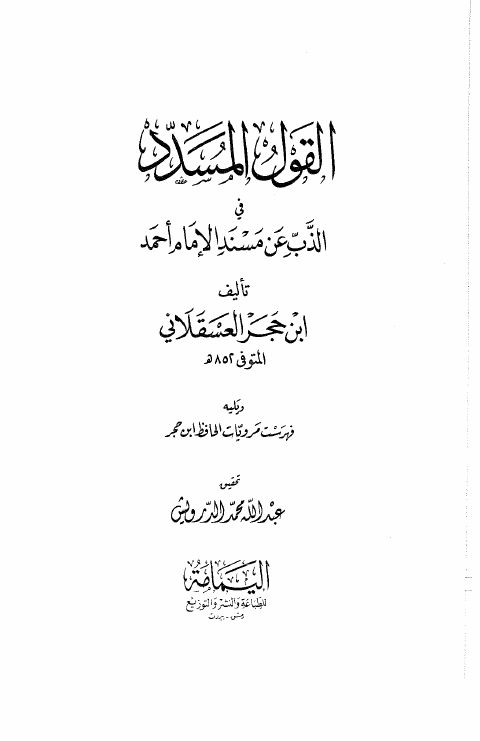

Downloads need an internet connection.
القول المسدد في الذب عن المسند للإمام أحمد- دار اليمامة
Authors: أحمد بن علي بن حجر العسقلاني
Editors: عبد الله محمد الدرويش
Publishers: دار اليمامة
**▫️ العنوان: القول المسدد في الذب عن المسند للإمام أحمد- دار اليمامة** ▪️ المؤلف: #أحمد_بن_علي_بن_حجر_العسقلاني ▫️ المحقق: #عبد_الله_محمد_الدرويش ▪️ الناشر: #دار_اليمامة ▫️ تاريخ النشر: 1405هـ 1985م ▪️ بلد النشر: بيروت، #لبنان ▫️ الطبعة: 1 ▪️ عدد الأجزاء: 1 ▫️ الصفحات: 156 ▪️ نوع الوعاء: #كتاب ▫️ التصنيف الرئيسي: #الحديث_وعلومه ▪️ التصنيف الفرعي: #تخريج ۪